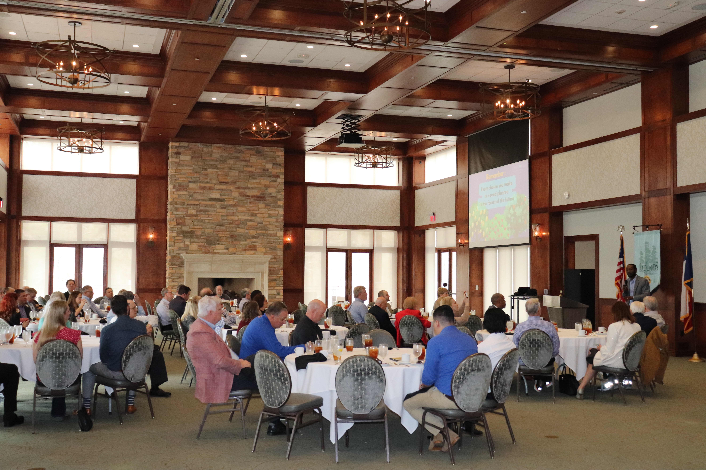

"Marcus Bridgewater's stage presence is powerful. His storytelling style and audience engagement methodologies are a bright light in today's world."
Andrew Okfee, Owner, AmotionKeynotes and presentations
Keynote speaker Marcus Bridgewater, known as Garden Marcus
A main-stage talk that energizes and inspires the audience. Personal, funny, and built to stick long after the event ends.

Length
30–60 minutes
Format
In person or virtual
Add-on
Q&A available
Based in
Houston area · travels nationwide
What a Garden Marcus keynote feels like
Marcus opens a room by meeting people where they are: with warmth, humor, and honesty. He shares the story of how the garden changed his life, and why growth can’t be forced, only tended with intention.
Each keynote connects what happens in the soil to what happens in us, drawing from the Choice Forward framework and Marcus’s books, including How to Grow and See Marcus Grow.
Marcus' technical background coupled with his stage presence helps the event planners of all kinds. Whether you are in search of a keynote speaker, motivational speaker, wellbeing speaker, or someone to synergize your conference keynote, Marcus can deliver.
Keynote sample: Patience Is an Active Process
Atmospheric event clip
What organizers say
"Marcus made an appearance at our inaugural all-company meeting. His words were powerful, moving and genuine."
Geoff Bremner, Chief Growth Officer, Bend Health"Not only does he present with quiet confidence, he leaves his audience inspired to learn and do more."
Ann Wolford, former chair, The Woodlands Chamber of CommerceKeynote FAQ
How long is a keynote?
Most keynotes run 30 to 60 minutes, with optional Q&A.
Can Marcus speak virtually?
Yes. Keynotes are available in person, virtually, or hybrid.
Where does Marcus travel from?
Marcus is based in the Houston area of Texas and travels nationwide.
What does a keynote cost?
Fees vary by format, location, and scope. Share your event details and we’ll send availability and investment ranges.